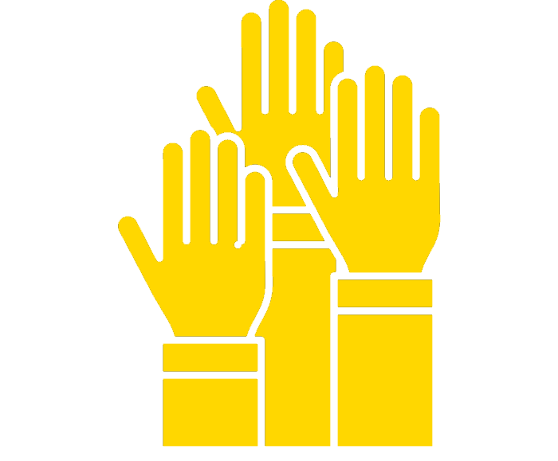
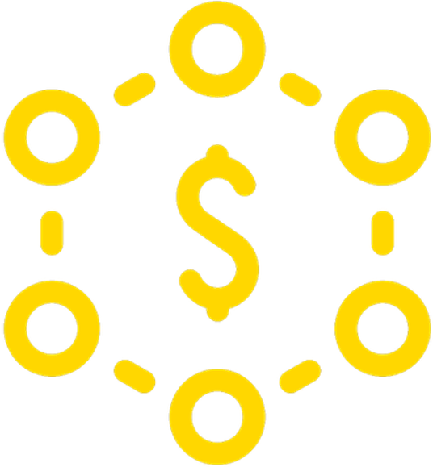
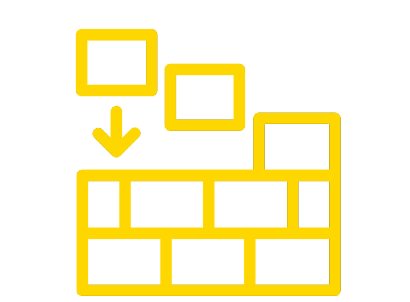
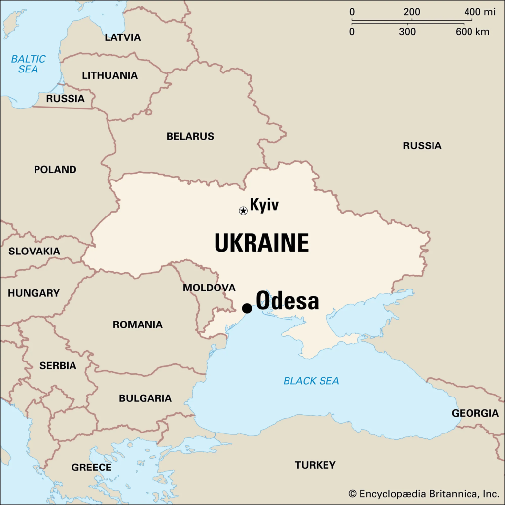

Volunteer
We volunteer with ENGin, a nonprofit organization that pairs Ukrainian students with English speakers to improve their English, an essential skill in many modern jobs.
Helping the Ukrainian people prepare for the future.
Even small acts make a difference.
Learn More About Us
We volunteer with ENGin, a nonprofit organization that pairs Ukrainian students with English speakers to improve their English, an essential skill in many modern jobs.

We have a GoFundMe campaign, initially focused on finding accommodations for refugees early on, but will continue to aid in housing challenges as the war continues.

We want to help rebuild. Since the start of the war, millions have been forced from their homes, cities have been destroyed. Inevitably, the nation will need to be rebuilt, and we plan to aid in that process.

The Ukrainian crisis has reminded us that even the worst of history can repeat itself. Our parents and grandparents fled Odesa when it was still part of the Soviet Union. They left everything behind to seek refuge in the United States, with nothing but what they could carry. They came to this country with no possessions or experience with the English language. This unfortunate reality is not dissimilar from the reality that many Ukrainians have been facing, and has spurred us into creating Kirova 23.
Kirova 23, the street address in Odesa where our family once lived, is a volunteer-supported initiative where we raise money and donate our time to support the Ukrainian people.
kirova23050@gmail.com